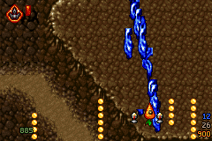

兩個座標空間
Tyrian 的完整 PC 畫面是 320×200，但戰鬥視窗不是整個畫面。右側儀表板與 下方狀態區移除後，專案使用 264×184 的原始 gameplay space。GBA 顯示為 240×160，因此水平與垂直各捨去 24 pixels：
玩家、敵人、子彈、碰撞與 level event 仍使用 source coordinates。 只有 presentation 把 world coordinate 減去裁切 origin。這避免逐物件縮放、 rounding drift 與碰撞規格分叉，也讓畫面密度保持原版感。
把隱藏的 24 pixels 變成柔性鏡頭
264×184 與 240×160 在兩軸都相差 24 pixels。固定置中裁切會把每一側 12 pixels 永久藏起來；現行實作則把這段 slack 當作有限的鏡頭行程。 玩家待在中央區域時畫面穩定不動，接近來源視野邊緣後才讓 crop origin 平順跟上。
- 從 source player position 求目標。 中心點為 `(156, 92)`；玩家超出 dead zone 的部分才轉成 camera target。
- 把目標限制在原本的裁切餘量。 每軸最多移動 ±12 pixels，所以不會顯示到 264×184 gameplay space 之外。
- 以 Q8 fixed point 做一階平滑。 每個 30 Hz logic tick 前進剩餘距離的 1/4，再四捨五入成硬體 scroll pixel； 小幅操作不會讓畫面顫動，快速靠邊也不會突然跳 12 pixels。
- 所有 presentation 共用同一原點。 三層 BG、玩家、敵人、子彈、爆炸與拾取物一起平移，原有 parallax 仍在各背景層自己的 source offset 上運作。
增加的是 GBA 可用活動範圍，不是改大關卡
固定中央 crop 的早期版本為避免船體被切掉，曾把玩家 source Y 從 OpenTyrian 的 `10..160` 收窄為 `17..152`。柔性鏡頭抵達上下邊界後， release 可以恢復原始 `JE_playerMovement()` 的 `10..160`： 最上方時船體第一個有效 pixel 位於 screen Y=5，最下方時最後一個有效 pixel 位於 Y=155，兩端仍完整可見。
鏡頭移動也必須納入背景串流
Tyrian 背景是持續捲動的 tile map，不是 264×184 靜態圖片。只改 GBA `VOFS` 會讓鏡頭在 Y=0 或 Y=24 時讀到尚未安裝的 ring rows，形成上下 邊界直條破圖。現行 scheduler 使用與硬體相同的 camera-adjusted presentation scroll；map scroll 或 camera scroll 任一方跨越 8-pixel 邊界，都會排程新露出的 top／bottom row。
所有 active layers 會先 preflight。若該 VBlank 暫時無法完成必要 row DMA，Q8 camera target 只延後一個 logic tick，不會先顯示 stale tile。 背景 ownership 另保留 21 個可見 rows，加上上下各 2 個 hysteresis rows； 這個 25-row window 避免玩家在邊界折返時反覆釋放、重建相同資料。
原始 Episode 2 High／Normal A/B 中，25-row 柔性鏡頭與固定 crop 都是 41 missed VBlanks；也就是增加視野活動範圍後，背景換列成本仍回到 固定鏡頭基線。v89 LOW 正式版沿用相同 camera 與 ownership band； dynamic frame drop 保存的 held window 也使用 camera-adjusted scroll，延後 presentation 時不會提前釋放仍在畫面上的 row。
三層不是三張裝飾圖
原版每層具有獨立捲動速度、水平 phase、是否位於敵人前後方等狀態。 GBA 使用三個 tile background 保存 layer identity，不能把缺少的 tile 用「看起來最接近」的圖補上，否則岩壁、雲與可破壞物件會在後續事件中錯位。
- 底層地形：通常最慢或作為固定地面。
- 中層：可依 source flag 移到部分 enemy group 前方。
- 上層／雲層：需要與 sky enemy、top enemy 分開排序。
把 PC draw order 翻成有限 priority
PC renderer 可以依序畫很多群組；GBA 只有有限 BG priority 與 OBJ priority。
專案沒有為某張錯圖硬寫例外，而是把 OpenTyrian 的
background2over、background3over、
topEnemyOver、skyEnemyOverAll 等規則整理成
可枚舉的 priority policy。
回歸測試會跑完整組合，現行契約包含 252 個 layer-rule checks。這讓修正 Episode 1 的雲層時，不會無意破壞 Episode 4 的前景物件。
為何 1:1 更便宜
ARM7TDMI 沒有硬體除法器。若每個 sprite、子彈與碰撞 box 都做 240/264、 160/184 的比例換算，除了 CPU cost，也會引入不同的四捨五入結果。 1:1 crop 把成本收斂成整數加減、OAM clipping 與 background offset， 將有限 cycle 留給敵人 AI、碰撞與資源快取。
